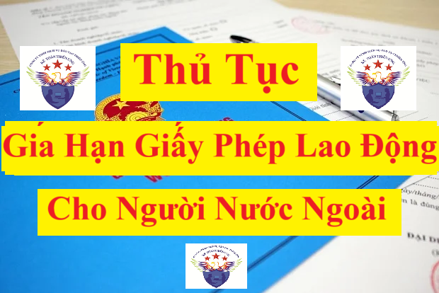

Hướng dẫn làm thủ tục: “Gia hạn giấy phép lao động cho người lao động nước ngoài làm việc tại Việt Nam” theo Quyết định 315/QĐ-BNV có hiệu lực từ ngày 04/4/2025.
a. Trình tự thực hiện:
- Bước 1: Trước ít nhất 5 ngày nhưng không quá 45 ngày trước ngày giấy phép lao động hết hạn, người nộp hồ sơ đề nghị gia hạn giấy phép lao động nộp hồ sơ cho Bộ Nội vụ (Cục Việc làm).
- Bước 2: Trong thời hạn 05 ngày làm việc, kể từ ngày nhận đủ hồ sơ đề nghị gia hạn giấy phép lao động, Bộ Nội vụ (Cục Việc làm) gia hạn giấy phép lao động. Trường hợp không gia hạn giấy phép lao động thì có văn bản trả lời và nêu rõ lý do.
- Bước 2: Trong thời hạn 05 ngày làm việc, kể từ ngày nhận đủ hồ sơ đề nghị gia hạn giấy phép lao động, Bộ Nội vụ (Cục Việc làm) gia hạn giấy phép lao động. Trường hợp không gia hạn giấy phép lao động thì có văn bản trả lời và nêu rõ lý do.
Đối với người lao động nước ngoài làm việc theo hình thức hợp đồng lao động, sau khi người lao động nước ngoài được gia hạn giấy phép lao động thì người sử dụng lao động và người lao động nước ngoài phải ký kết hợp đồng lao động bằng văn bản theo quy định của pháp luật lao động Việt Nam trước ngày dự kiến tiếp tục làm việc cho người sử dụng lao động.
Người sử dụng lao động phải gửi hợp đồng lao động đã ký kết theo yêu cầu tới Bộ Nội vụ (Cục Việc làm). Hợp đồng lao động là bản gốc hoặc bản sao có chứng thực.
b. Cách thức thực hiện: Qua dịch vụ bưu chính công ích hoặc trực tuyến hoặc trực tiếp tới Bộ Nội vụ (Cục Việc làm).
c. Thành phần, số lượng hồ sơ:
- Thành phần hồ sơ:
1. Văn bản đề nghị gia hạn giấy phép lao động của người sử dụng lao động theo Mẫu số 11/PLI Phụ lục I ban hành kèm theo Nghị định số 152/2020/NĐ-CP.
Các bạn có thể xem và tải Mẫu số 11/PLI Phụ lục I ban hành kèm theo Nghị định số 152/2020/NĐ-CP về tại đây: Mẫu 11/PLI gia hạn giấy phép lao động cho người nước ngoài
2. 02 ảnh màu (kích thước 4 cm x 6 cm, phông nền trắng, mặt nhìn thẳng, đầu để trần, không đeo kính màu), ảnh chụp không quá 06 tháng tính đến ngày nộp hồ sơ.
3. Giấy phép lao động còn thời hạn đã được cấp.
4. Văn bản chấp thuận nhu cầu sử dụng người lao động nước ngoài trừ những trường hợp không phải xác định nhu cầu sử dụng người lao động nước ngoài.
5. Bản sao có chứng thực hộ chiếu hoặc bản sao hộ chiếu có xác nhận của người sử dụng lao động còn giá trị theo quy định của pháp luật.
6. Giấy chứng nhận sức khỏe hoặc giấy khám sức khỏe do cơ quan, tổ chức y tế có thẩm quyền của nước ngoài hoặc của Việt Nam cấp có giá trị trong thời hạn 12 tháng, kể từ ngày ký kết luận sức khỏe đến ngày nộp hồ sơ hoặc giấy chứng nhận có đủ sức khoẻ theo quy định của Bộ trưởng Bộ Y tế.
7. Một trong các giấy tờ chứng minh người lao động nước ngoài tiếp tục làm việc cho người sử dụng lao động theo nội dung giấy phép lao động đã được cấp trừ trường hợp người lao động nước ngoài làm việc theo hình thức hợp đồng lao động:
- Đối với người lao động nước ngoài di chuyển nội bộ doanh nghiệp phải có văn bản của doanh nghiệp nước ngoài cử sang làm việc tại hiện diện thương mại của doanh nghiệp nước ngoài đó trên lãnh thổ Việt Nam và văn bản chứng minh người lao động nước ngoài đã được doanh nghiệp nước ngoài đó tuyển dụng trước khi làm việc tại Việt Nam ít nhất 12 tháng liên tục;
- Đối với người lao động nước ngoài vào Việt Nam để thực hiện các loại hợp đồng hoặc thỏa thuận về kinh tế, thương mại, tài chính, ngân hàng, bảo hiểm, khoa học kỹ thuật, văn hóa, thể thao, giáo dục, giáo dục nghề nghiệp và y tế phải có hợp đồng hoặc thỏa thuận ký kết giữa đối tác phía Việt Nam và phía nước ngoài, trong đó phải có thỏa thuận về việc người lao động nước ngoài làm việc tại Việt Nam;
- Đối với người lao động nước ngoài là nhà cung cấp dịch vụ theo hợp đồng phải có hợp đồng cung cấp dịch vụ ký kết giữa đối tác phía Việt Nam và phía nước ngoài và văn bản chứng minh người lao động nước ngoài đã làm việc cho doanh nghiệp nước ngoài không có hiện diện thương mại tại Việt Nam được ít nhất 02 năm;
- Đối với người lao động nước ngoài vào Việt Nam để chào bán dịch vụ phải có văn bản của nhà cung cấp dịch vụ cử người lao động nước ngoài vào Việt Nam để đàm phán cung cấp dịch vụ;
- Đối với người lao động nước ngoài làm việc cho tổ chức phi chính phủ nước ngoài, tổ chức quốc tế tại Việt Nam được phép hoạt động theo quy định của pháp luật Việt Nam phải có văn bản của cơ quan, tổ chức cử người lao động nước ngoài đến làm việc cho tổ chức phi chính phủ nước ngoài, tổ chức quốc tế tại Việt Nam trừ trường hợp người lao động nước ngoài làm việc theo hình thức hợp đồng lao động và giấy phép hoạt động của tổ chức phi chính phủ nước ngoài, tổ chức quốc tế tại Việt Nam theo quy định của pháp luật;
- Đối với người lao động nước ngoài là nhà quản lý, giám đốc điều hành, chuyên gia, lao động kỹ thuật thì phải có văn bản của cơ quan, tổ chức, doanh nghiệp nước ngoài cử người lao động nước ngoài sang làm việc tại Việt Nam và phù hợp với vị trí công việc dự kiến làm việc hoặc giấy tờ chứng minh là nhà quản lý.
8. Giấy tờ quy định tại các khoản 3, 4, 6 và 7 nêu trên là 01 bản gốc hoặc bản sao có chứng thực, nếu của nước ngoài thì phải hợp pháp hóa lãnh sự và phải dịch ra tiếng Việt và công chứng hoặc chứng thực trừ trường hợp được miễn hợp pháp hóa lãnh sự theo điều ước quốc tế mà nước Cộng hòa xã hội chủ nghĩa Việt Nam và nước ngoài liên quan đều là thành viên hoặc theo nguyên tắc có đi có lại hoặc theo quy định của pháp luật.
d. Thời hạn giải quyết: 05 ngày làm việc kể từ ngày nhận đủ hồ sơ hợp lệ theo quy định.
e. Đối tượng thực hiện thủ tục hành chính:
- Tổ chức quốc tế, văn phòng của dự án nước ngoài tại Việt Nam; cơ quan, tổ chức do Chính phủ, Thủ tướng Chính phủ, bộ, ngành cho phép thành lập và hoạt động theo quy định của pháp luật;
- Văn phòng đại diện, chi nhánh của doanh nghiệp, cơ quan, tổ chức do Chính phủ, Thủ tướng Chính phủ, bộ, cơ quan ngang bộ, cơ quan thuộc Chính phủ cho phép thành lập;
- Cơ quan nhà nước, tổ chức chính trị, tổ chức chính trị - xã hội, tổ chức chính trị xã hội - nghề nghiệp, tổ chức xã hội, tổ chức xã hội - nghề nghiệp do Chính phủ, Thủ tướng Chính phủ, bộ, cơ quan ngang bộ, cơ quan thuộc Chính phủ cho phép thành lập;
- Tổ chức sự nghiệp, cơ sở giáo dục do Chính phủ, Thủ tướng Chính phủ, bộ, cơ quan ngang bộ, cơ quan thuộc Chính phủ cho phép thành lập;
- Làm việc cho một người sử dụng lao động tại nhiều tỉnh, thành phố trực thuộc trung ương.
- Văn phòng đại diện, chi nhánh của doanh nghiệp, cơ quan, tổ chức do Chính phủ, Thủ tướng Chính phủ, bộ, cơ quan ngang bộ, cơ quan thuộc Chính phủ cho phép thành lập;
- Cơ quan nhà nước, tổ chức chính trị, tổ chức chính trị - xã hội, tổ chức chính trị xã hội - nghề nghiệp, tổ chức xã hội, tổ chức xã hội - nghề nghiệp do Chính phủ, Thủ tướng Chính phủ, bộ, cơ quan ngang bộ, cơ quan thuộc Chính phủ cho phép thành lập;
- Tổ chức sự nghiệp, cơ sở giáo dục do Chính phủ, Thủ tướng Chính phủ, bộ, cơ quan ngang bộ, cơ quan thuộc Chính phủ cho phép thành lập;
- Làm việc cho một người sử dụng lao động tại nhiều tỉnh, thành phố trực thuộc trung ương.
f. Cơ quan giải quyết thủ tục hành chính: Bộ Nội vụ (Cục Việc làm).
g. Kết quả thực hiện thủ tục hành chính: Gia hạn giấy phép lao động cho người lao động nước ngoài.
h. Phí, lệ phí: Không có.
i. Tên mẫu đơn, mẫu tờ khai: Tờ khai đề nghị gia hạn giấy phép lao động theo mẫu số 11/PLI Phụ lục I ban hành kèm theo Nghị định số 152/2020/NĐ-CP.
k. Yêu cầu, điều kiện thực hiện thủ tục hành chính: Người lao động nước ngoài đã được cấp giấy phép lao động đáp ứng một trong các điều kiện sau:
1. Giấy phép lao động đã được cấp còn thời hạn ít nhất 05 ngày nhưng không quá 45 ngày.
2. Được cơ quan có thẩm quyền chấp thuận nhu cầu sử dụng người lao động nước ngoài.
3. Giấy tờ chứng minh người lao động nước ngoài tiếp tục làm việc cho người sử dụng lao động theo nội dung giấy phép lao động đã được cấp.
l. Căn cứ pháp lý của thủ tục hành chính:
2. Được cơ quan có thẩm quyền chấp thuận nhu cầu sử dụng người lao động nước ngoài.
3. Giấy tờ chứng minh người lao động nước ngoài tiếp tục làm việc cho người sử dụng lao động theo nội dung giấy phép lao động đã được cấp.
- Bộ luật Lao động 2019;
- Nghị quyết số 190/2025/QH15 ngày 19/02/2025 của Quốc hội quy định về xử lý một số vấn đề liên quan đến sắp xếp tổ chức bộ máy nhà nước.
- Nghị định số 25/2025/NĐ-CP ngày 21 tháng 02 năm 2025 của Chính phủ quy định chức năng, nhiệm vụ, quyền hạn và cơ cấu tổ chức của Bộ Nội vụ
- Nghị định số 152/2020/NĐ-CP ngày 30 tháng 12 năm 2020 của Chính phủ quy định về người lao động nước ngoài làm việc tại Việt Nam và tuyển dụng, quản lý người lao động Việt Nam làm việc cho tổ chức, cá nhân nước ngoài tại Việt Nam;
- Nghị định số 70/2023/NĐ-CP ngày 18 tháng 9 năm 2023 của Chính phủ sửa đổi, bổ sung một số điều của Nghị định số 152/2020/NĐ-CP ngày 30 tháng 12 năm 2020 của Chính phủ quy định về người lao động nước ngoài làm việc tại Việt Nam và tuyển dụng, quản lý người lao động Việt Nam làm việc cho tổ chức, cá nhân nước ngoài tại Việt Nam.
- Nghị quyết số 190/2025/QH15 ngày 19/02/2025 của Quốc hội quy định về xử lý một số vấn đề liên quan đến sắp xếp tổ chức bộ máy nhà nước.
- Nghị định số 25/2025/NĐ-CP ngày 21 tháng 02 năm 2025 của Chính phủ quy định chức năng, nhiệm vụ, quyền hạn và cơ cấu tổ chức của Bộ Nội vụ
- Nghị định số 152/2020/NĐ-CP ngày 30 tháng 12 năm 2020 của Chính phủ quy định về người lao động nước ngoài làm việc tại Việt Nam và tuyển dụng, quản lý người lao động Việt Nam làm việc cho tổ chức, cá nhân nước ngoài tại Việt Nam;
- Nghị định số 70/2023/NĐ-CP ngày 18 tháng 9 năm 2023 của Chính phủ sửa đổi, bổ sung một số điều của Nghị định số 152/2020/NĐ-CP ngày 30 tháng 12 năm 2020 của Chính phủ quy định về người lao động nước ngoài làm việc tại Việt Nam và tuyển dụng, quản lý người lao động Việt Nam làm việc cho tổ chức, cá nhân nước ngoài tại Việt Nam.
